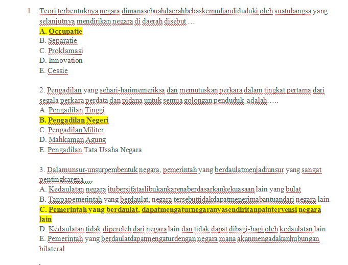

Pertama
- Teori terbentuknya negara dimana sebuah daerah bebas kemudian diduduki oleh suatu bangsa yang selanjutnya mendirikan negara di daerah disebut
- Occupatie
- Separatie
- Proklamasi
- Innovation
- Cessie
- Pengadilan yang sehari-harimemeriksa dan memutuskan perkara dalam tingkat pertama dari segala perkara perdata dan pidana untuk semua golongan penduduk adalah
- Pengadilan Tinggi
- Pengadilan Negeri
- Pengadilan Militer
- Mahkaman Agung
- Pengadilan Tata Usaha Negara
- Dalam unsur-unsur pembentuk negara, pemerintah yang berdaulat menjadi unsur yang sangat penting karena

- Makna yang terkandung dalam pasal 29 ayat 2 UUD 1945 diantaranya… .
- Hal yang melatar belakangi suatu negara monarki absolute beralih ke system pemerintahan monarki parlementer dimana raja hanya berfungsi sebagai simbol negara, sedangkan kepala pemerintahannya dijalankan oleh perdana menteri adalah dalam rangka
- Issuke bhinnekaan mencuat disaat terjadinya pemilukada serentak, kita sebagai bangsa harus menerima kenyataan terhadap adanya keberagaman, namun semangat persatuan dan kesatuan harus menjadi prioritas utama. Pernyataan ini memiliki semangat sesuai dengan ….
- Pentingnya keberadaan partai politik dalam sistem politik di Indonesia adalah
- Dalam memberikan grasi, maka Presiden selaku kepala negara harus meminta persetujuan dari …
- Budaya politik dimana tingkat partisipasi politik masyarakat sangat tinggi, merupakan jenis budaya politik….
- Dalam pemilu baik legislatif maupun eksekutif, untuk di daerah pedalaman masyarakatnya cenderung melakukan sikap apatis. Hal ini jika ditinjau dari Budaya politik yang berkembang di masyarakat Indonesia sekarang menunjukkan adanya ….
- . Demokrasi Pancasila adalahdemokrasi yang lahirdaribudayabangsa, dimanamemilikikarakteristik yang membedakandengandemokrasi liberal maupunsosialis. Adapun karakteristikdaridemokrasi Pancasila adalah
- . Orde Barulahirsebagaiupayamenegakkan Pancasila dan UUD NRI Tahun 1945, dalampraktekketatatanegaraankehidupandemokrasiberjalansecara…..
- .Bilaseseorangkarenapartisipasi dan jasanya yang besar ,makadiamemperolehhakataupendapatan yang lebihbesarmerupakansesuatu yang adil. Hal inisesuaidengankonsepkeadilan
- .Dalam masyarakatdemokratis,keberadaan pers menjadi sarana utama dalam meneruskan atau menyambungkan aspirasi masyarakat kepada pemerintah. Hal ini mengandung arti bahwa peran pers adalah....
- .Contohketerbukaandalamkehidupanberbangsa dan bernegaraantara lain....
- Setiapperjanjian yang telahdisepakatiharusditaati dan dilaksanakan oleh pesertaperjanjian, merupakan salah satuasasperjanjianinternasional yang disebut…..
- Meningkatkan kerja sama kedua negara di berbagaibidangmelaluipengumpulaninformasisebanyak-banyaknyadari negara pengirimnyaadalahtugasdari
- Proses pembukaan dan pengangkatanperwakilandiplomatik di antarakedua negara yang menjalinhubungandiplomatikmelaluibeberapatahapan, salah satunyaadalah….
- Salah satupenyebabtimbulnyasengketainternasionaladalahsegipolitis, yaituberupa…..
- Suatu teknik hukum untuk menyelesaikan persengketaan internasional dengan menyerahkan putusan kepada lembaga-lembaga peradilan disebut…..
- Ideologi Pancasila yang bersifatdinamismemberikandampakpostifterhadapperubahan dan perkembanganbangsa Indonesia. Alasanbangsa Indonesia membutuhkan Pancasila sebagaiIdeologiterbukakarenaideologiPancasila .…
- Pancasila sebagai ideologi terbuka mengandung makna bahwa...
- Nilai yang merupakan cita-cita, pemikiran-pemikiran, serta nilai-nilai yang dianggap baik, harus memiliki norma yang jelas dan harus mampu direalisasikan dalam kehidupan praktis, sebagai bukti konkrit disebut
- .Pancasila sebagai sumber nilai dilaksanakan dalam kehidupan bermasyarakat, berbangsa dan bernegara, dengan demikian sebagai sumber nilai Pancasila memiliki makna ....
- Sikap keikhlasan dan kejujuran seorang pemimpin yang berjiwa Pancasila adalah
- Berdasarkan UUD 1945, bentuk pemerintahan Indonesia adalah Republik dengan system cabinet presidensil. Sedangkan berdasarkan konstitusi RIS 1949 ialah…..
- . Dalam ketatanegaraan Republik Indonesia, kedudukan Pembukaan UUD Negara RI Tahun 1945 sangatlah penting dalam perjalanan negara RI. Hal ini menunjukkan bahwa Pembukaan UUD Negara RI Tahun 1945 merupakan
- Badan eksekutif dalam arti luas
- Menurut UUD Negara RI tahun 1945 hasil amandemen, kekuasaan presiden sebagai kepala pemerintahan, antara lain sebagai berikut ini, kecuali
- Kelemahan sistem pemerintahan Indonesia sebelum amandemen UUD Negara RI tahun 1945 adalah
- Salah satu institusi atau lembaga yang bertugas melakukan perlindungan dan penegakkan HAM di Indonesia adalah Lembaga Bantuan Hukum Indonesia (LBHI), di antara tugas yang diembannya yaitu ....
- Perhatikan dengan seksama beberapa pernyataan dibawah ini…..
1. Kontrolsosial
2. Lembaga sosial
3. Pressure group
4. Pendidikan
5. Lembaga profit
6. Media informasi
Dari pernyataan diatas manakah yang termasuk peranan pers dalam masyarakat demokratis
- Menurut Undang-Undang Pers nomor 40 tahun 1999 pasal 15, dalam rangka pengembangan kemerdekaan pers dan meningkatkan kehidupan pers nasional dibentuk sebuah lembaga
- Dalam melakukan liputan dan pemberitaan peristiwa kejahatan asusila terhadap anak anak, sesuai kode etik jurnalistik, seorang jurnalis tidak diperbolehkan
- Pada dasar nya perwakilan diplomatik dan perwakilan konsuler di luar negeri dalam menjalankan tugasnya memiliki kekebalan diplomatik. Hal ini menunjukkan bahwa pentingnya kekebalan diplomatic bagi korps perwakilan diplomatik dan perwakilankonsulerdiluar negeri ....
- Salah satu dampak penyalahgunaan media massa adalah banyaknya pemberitaan yang sifatnya menyebarkan permusuhan (hate speech), yang harus dilakukan oleh kita sebagai masyarakat pengguna informasi adalah
- Salah satu dampak positif globalisasi di bidang sosial budaya adalah
- . Di bawah ini adalah dampak negatif globalisasi di bidang ekonomi yang harus diwaspadai oleh bangsa Indonesia adalah
- Keikutsertaan Indonesia dalam organisasi Internasional membuka peluang bagi bangsa Indonesia untuk berperan dalam tata pergaulan internasional. Ini menunjukkan pentingnya Indonesia menjadi anggota dari suatu organisasi internasional yaitu
- Salah satu factor determinan dalam era globalisasi yaitu factor teknologi informasi yang berkembang cepat dan skala masif, namun sering kali di gunakan oleh oknum yang tidak bertanggung jawab untuk menyebarkan faham terlarang seperti komunisme dan radicalism emelalui media sosial maupun lewat netizen jurnalis seperti blog dan web. Hal yang paling efektif untuk menangkal pengaruh negatif penyebaran faham tersebut adalah